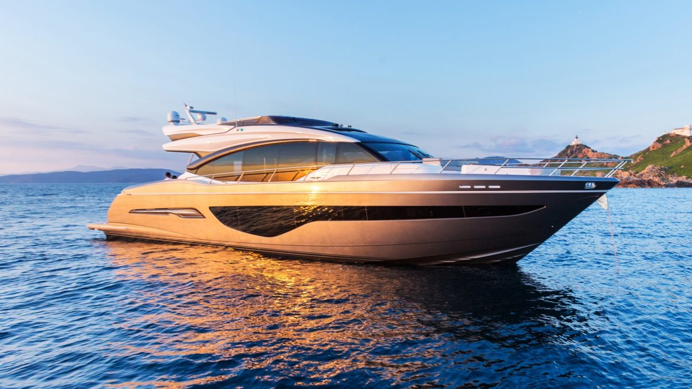
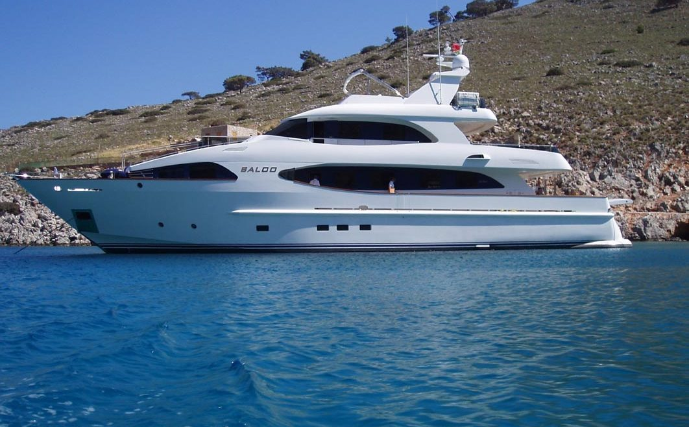
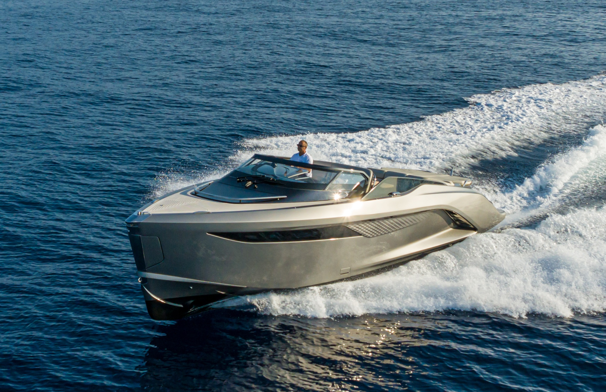

ЯХТА PRINCESS S78
Princess S78 по-настоящему универсальна: при высоком уровне комфорта она развивает скорость до 39 узлов. Все оснащение этой яхты соответствует высоким техническим стандартам. Кокпит легко трансформируется, что позволяет организовать обеденную зону или места для отдыха с максимальным удобством для ваших гостей.

ЯХТА CBI NAVI 3300 BALOO
Моторная яхта CBI Navi 3300 "BALOO" — это выдающееся 33-метровое судно. Потрясающий интерьер великолепно сочетается с проверенным временем экстерьером. Планировка яхты включает просторную главную палубу и 5 кают, в которых с комфортом могут разместиться до 8 гостей. Созданные для отдыха на открытом воздухе, вместительный кокпит и верхняя палуба станут для вас и ваших гостей излюбленным местом для общения. Кроме того, гости смогут расслабиться в джакузи, позагорать на фордеке или гидравлической купальной платформе с механизмом Opacmare.

ЯХТА PRINCESS R35
Провокационная, высокотехнологичная, волнующая — именно такой будет ваша долгожданная новая яхта Princess R35. 35 футов в длину, полностью выполненная из углеродного волокна и оснащенная двигателями Volvo V8, она способна развивать скорость до 50 узлов. Дизайн корпуса предполагает планировку с просторной каютой и прекрасно оснащенный камбуз с диваном, который легко превращается в просторную двуспальную кровать. На борту имеется санузел.